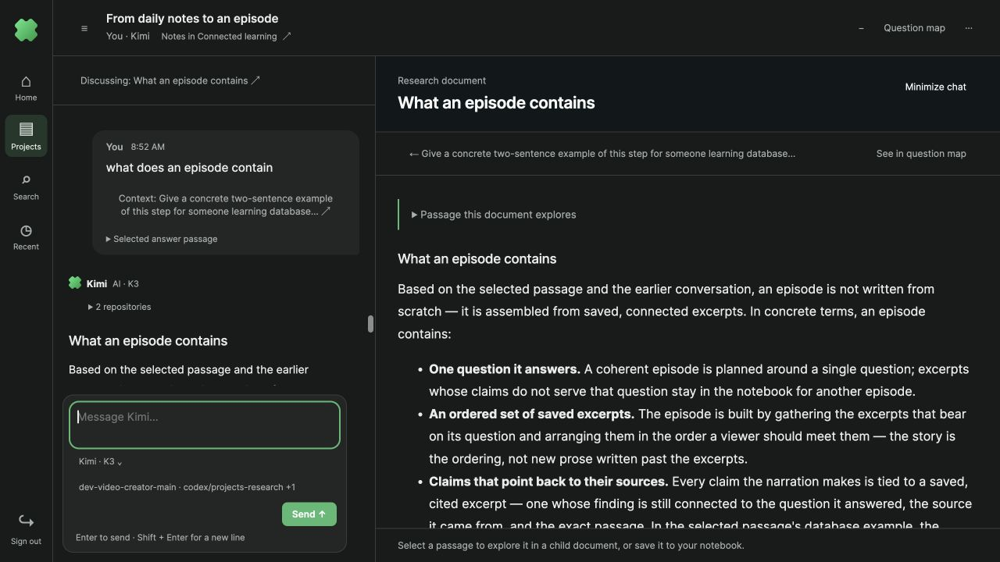
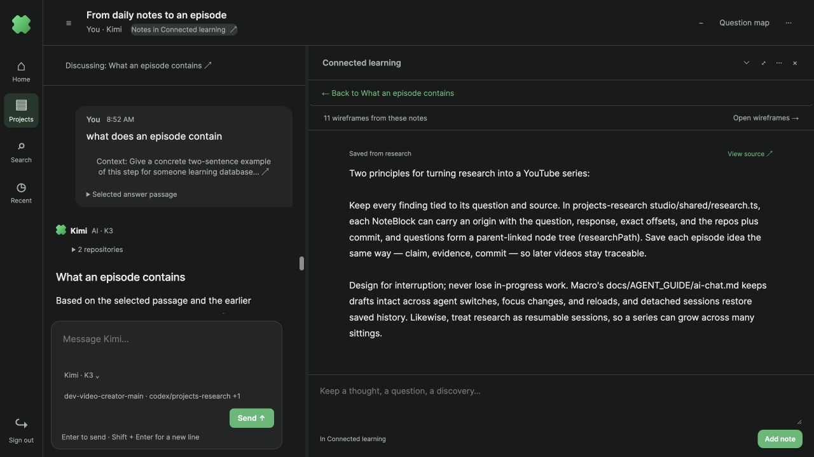
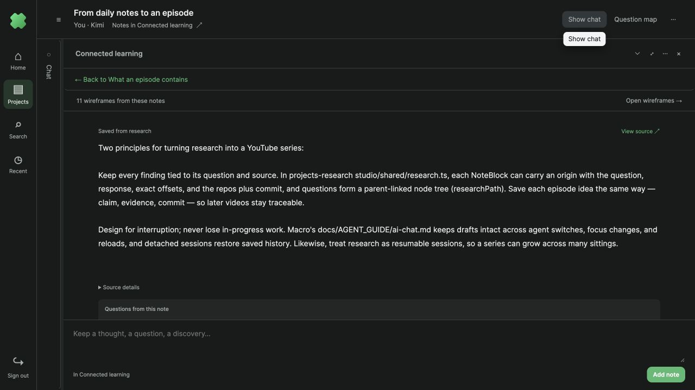
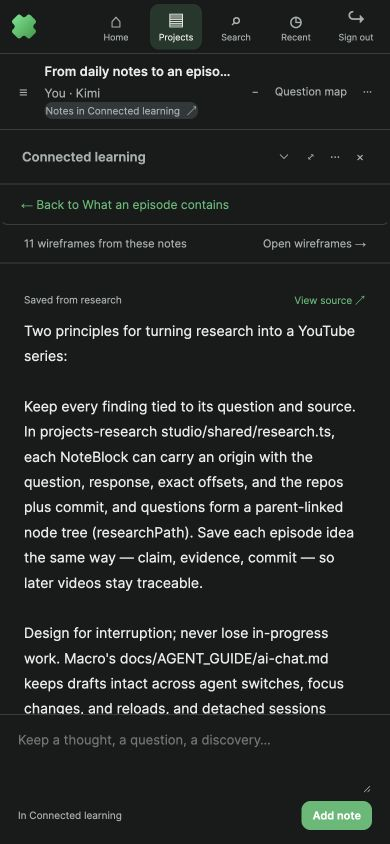

18 October 2026 · parallel stack 4291. Tested existing real Kimi answers; this pass did not generate new content.

Named destinations and direct backtracking. The chat shows the active document title. Documents link directly to their parent and to the question map. The source passage is folded until needed.

Notebook as a readable primary resource. Notes now use the main reading space alongside chat, with an explicit return link naming the research document.

Minimized chat releases its space. The notebook expands beside a compact chat rail. Restoring chat returns to the active document’s conversation turn.

Mobile return path. The same named return link stays visible on a narrow screen.
Verified: document → parent → map drawer → selected document (map minimizes); document → notebook → document; chat minimize/restore; draft retention through navigation; desktop and mobile layouts. The temporary walkthrough draft was cleared without sending it.